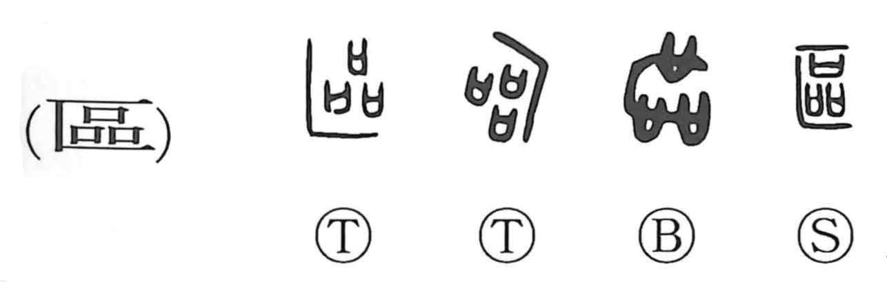

区

Kun: | On: ku
ward ・ district ・ section ・ to partition ・ to set apart
Explanation
区, formerly 區, places 品 within 匸, a hidden enclosure. 品 here is a group of prayer vessels, each represented by 口. They are arranged in a secluded sacred place where prayers and incantations can be performed privately.
The place of prayer is set apart within a small boundary. From this come a section, a defined area, and the act of dividing or distinguishing one part from another. The modern meanings of district, ward, and division retain that marked-off space.
Related graphs preserve actions within the rite: 謳 concerns the raised voice of invocation, while 毆 adds the striking of the vessels to stir their spiritual power. 區 itself identifies the enclosed setting in which these acts take place.